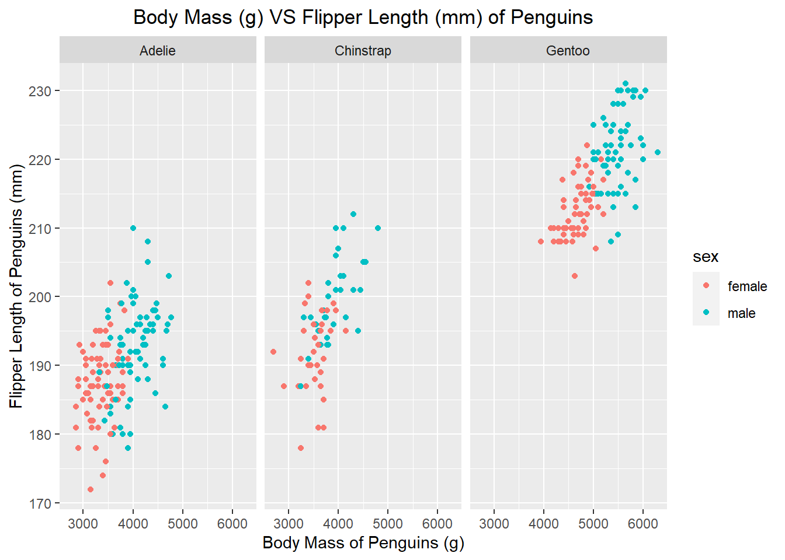

# A tibble: 6 × 8
species island bill_length_mm bill_depth_mm flipper_le…¹ body_…² sex year
<fct> <fct> <dbl> <dbl> <int> <int> <fct> <int>
1 Chinstrap Dream 45.7 17 195 3650 fema… 2009
2 Chinstrap Dream 55.8 19.8 207 4000 male 2009
3 Chinstrap Dream 43.5 18.1 202 3400 fema… 2009
4 Chinstrap Dream 49.6 18.2 193 3775 male 2009
5 Chinstrap Dream 50.8 19 210 4100 male 2009
6 Chinstrap Dream 50.2 18.7 198 3775 fema… 2009
# … with abbreviated variable names ¹flipper_length_mm, ²body_mass_g
Data tidying
The following lines of code are tidying the “penguin_data” data set. The code is removing any values in the data set that have an NA and creating a new data set called “clean_penguin_data”
The following lines of code are manipulation the “clean_penguin_data” data set. The code is converting millimeters to centimeters, and grams to milligrams. New columns will be created in the clean_penguin_data
Below are lines of code that are summarizing the “clean_penguin_data” based on specific attributes. The following is grouping the data by island, and calculating the mean of bill length, bill depth, flipper length, and body mass. This data is added to a new data frame called “island_penguin_summary”.
Below are lines of code that are summarizing the “clean_penguin_data” based on specific attributes. The following is grouping the data by sex, and calculating the mean of bill length, bill depth, flipper length, and body mass. This data is added to a new data frame called “sex_penguin_summary”.
Below are lines of code that are summarizing the “clean_penguin_data” based on specific attributes. The following is grouping the data by species, and calculating the mean of bill length, bill depth, flipper length, and body mass. This data is added to a new data frame called “species_penguin_summary”.
Data visualization of body mass vs flipper length of penguins
The code lines below are utilizing the ggplot package to visualize the “clean_penguin_data”. This data is a scatter plot with body mass on the x-axis and flipper length on the y-axis, with the color of data points being differentiated by color. Additionally, the graph is facted by species of the penguins
Code
ggplot(data =clean_penguin_data, mapping =aes(x =body_mass_g, y =flipper_length_mm, color =sex))+geom_point()+facet_wrap(~species)+labs(x ="Body Mass of Penguins (g)", y ="Flipper Length of Penguins (mm)", title ="Body Mass (g) VS Flipper Length (mm) of Penguins")+theme(plot.title =element_text(hjust =0.5))

Source Code
---title: "R - Palmer Penguin Analysis and Visualization"author: "Bailie Wynbelt"date: "2023-03-25"categories: [R, Analysis, Visualization]image: "penguins.jpg"format: html---I used the free Palmer Penguins data set in R to conduct analysis and create visualizations## Reading tidyverseThe following lines of code is reading in the tidyverse package so specific functions can be used to analyze the data.```{r Loading Packages}library(tidyverse)```## Loading in the palmer penguin data set```{r Reading in Data}library(palmerpenguins)penguin_data <- penguins```## Gaining a general oversight of the dataThe **head()** and **tail()** functions give a general oversight of what the data is comprised of in terms of rows and columns.```{r Overview of data}head(penguin_data)tail(penguin_data)```## Data tidyingThe following lines of code are tidying the "penguin_data" data set. The code is removing any values in the data set that have an NA and creating a new data set called **"clean_penguin_data"**```{r Data tidying}clean_penguin_data <- penguin_data %>%drop_na()```## Data manipulationThe following lines of code are manipulation the "clean_penguin_data" data set. The code is converting millimeters to centimeters, and grams to milligrams. New columns will be created in the **clean_penguin_data**```{r Data manipulation}clean_penguin_data <- clean_penguin_data %>%mutate(bill_length_cm = bill_length_mm/10,bill_depth_cm = bill_depth_mm/10,flipper_length_cm = flipper_length_mm/10,body_mass_mg = body_mass_g/1000)```## Data analysis of islandsBelow are lines of code that are summarizing the "clean_penguin_data" based on specific attributes. The following is grouping the data by *island*, and calculating the mean of bill length, bill depth, flipper length, and body mass. This data is added to a new data frame called **"island_penguin_summary"**.```{r Data Analysis by Island}island_penguin_summary <- clean_penguin_data %>%group_by(island) %>%summarize(mean_bill_length_mm =mean(bill_length_mm),mean_bill_depth_mm =mean(bill_depth_mm),mean_flipper_length_mm =mean(flipper_length_mm),mean_body_mass_g =mean(body_mass_g))```## Data analysis of sexBelow are lines of code that are summarizing the "clean_penguin_data" based on specific attributes. The following is grouping the data by *sex*, and calculating the mean of bill length, bill depth, flipper length, and body mass. This data is added to a new data frame called **"sex_penguin_summary"**.```{r Data Analysis by Sex}sex_penguin_summary <- clean_penguin_data %>%group_by(sex) %>%summarize(mean_bill_length_mm =mean(bill_length_mm),mean_bill_depth_mm =mean(bill_depth_mm),mean_flipper_length_mm =mean(flipper_length_mm),mean_body_mass_g =mean(body_mass_g))```## Data analysis of speciesBelow are lines of code that are summarizing the **"clean_penguin_data"** based on specific attributes. The following is grouping the data by *species*, and calculating the mean of bill length, bill depth, flipper length, and body mass. This data is added to a new data frame called **"species_penguin_summary"**.```{r Data Analysis by Species}species_penguin_summary <- clean_penguin_data %>%group_by(species) %>%summarize(bill_length_mm =mean(bill_length_mm),mean_bill_depth_mm =mean(bill_depth_mm),mean_flipper_length_mm =mean(flipper_length_mm),mean_body_mass_g =mean(body_mass_g))```## Data visualization of body mass vs flipper length of penguinsThe code lines below are utilizing the **ggplot** package to visualize the "clean_penguin_data". This data is a scatter plot with *body mass* on the x-axis and *flipper length* on the y-axis, with the color of data points being differentiated by color. Additionally, the graph is facted by *species* of the penguins```{r Visualization}ggplot(data = clean_penguin_data,mapping =aes(x = body_mass_g, y = flipper_length_mm,color = sex)) +geom_point() +facet_wrap(~species) +labs(x ="Body Mass of Penguins (g)",y ="Flipper Length of Penguins (mm)",title ="Body Mass (g) VS Flipper Length (mm) of Penguins") +theme(plot.title =element_text(hjust =0.5))```